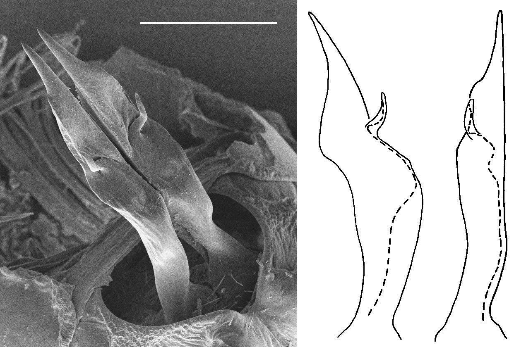

Full text is available as a scanned copy of the original print version.
Get a printable copy (PDF file) of the
complete article, or click on a page image below to browse page by page.
Links are also available for
Selected References.
Images in this article
Figure 1 (left) G. austrinum sp. nov., Tahune Bridge, southern Tasmania, QVM 23:16195; SEM of gonopods in situ. Scale-bar = 0.5 mm. (right) G. austrinum sp. nov., Gold Creek, southern Tasmania, QVM 23:14021; outline sketches of right gonopod showing course of prostatic groove (dashed line): lateral view, left; posterior view, right.Figure 2 (left) G. extremum sp. nov., Lake Sydney, southern Tasmania, QVM 23:14019; SEM of gonopods in situ. Scale-bar = 0.5 mm. (right) G. extremum sp. nov., Hastings Caves, southern Tasmania, QVM 23:8059; outline sketch of right gonopod, lateral view, showing course of prostatic groove (dashed line).Figure 3 (left) G. imber sp. nov., Tarraleah, central Tasmania, QVM 23:8047; SEM of gonopods in situ. Scale-bar = 0.5 mm. Prefemoral processes are parallel in life and in alcohol-preserved material; the divergence seen in this SEM is an artefact of specimen preparation. (right) G. imber sp. nov., Argent R., western Tasmania, QVM 23:8051; outline sketch of right gonopod, lateral view, showing course of prostatic groove (dashed line).Figure 4 (left) G. plomleyi sp. nov., Rattler Hill, north-east Tasmania, QVM 23:8068; SEM of gonopods in situ. Scale-bar = 0.5 mm. (right) G. plomleyi sp. nov., Crystal Hill, north-east Tasmania, QVM 23:8069; out- line sketch of right gonopod, lateral view, showing course of prostatic groove (dashed line).
Figure 5 Sketches of epiproct form. A, Typical form in Gasterogramma; G. austrinum paratype, QVM 23:40629; lateral view. B, G. plomleyi, male paratype, QVM 23:8068, lateral view. C, same specimen as B, ventral view.Figure 6 A–D, G. psi gonopod variations, seen in situ; see fig. 11 for locations. A, Washpond Forest, north-west Tasmania, QVM 23:8085. B, Notley Gorge, north-central Tasmania, QVM 23:8139. C, Coles Creek, central Tasmania, QVM 23:24797. D, Henty R., western Tasmania, QVM 23:8143. Scale-bar in all cases = 0.5 mm.
Figure 6 A–D, G. psi gonopod variations, seen in situ; see fig. 11 for locations. A, Washpond Forest, north-west Tasmania, QVM 23:8085. B, Notley Gorge, north-central Tasmania, QVM 23:8139. C, Coles Creek, central Tasmania, QVM 23:24797. D, Henty R., western Tasmania, QVM 23:8143. Scale-bar in all cases = 0.5 mm.Figure 8 (left) G. rusticum sp. nov., Don Reserve, north-central Tasmania, QVM 23:16199; SEM of gonopods in situ. Scale-bar = 0.5 mm. (right) G. rusticum sp. nov., Gog Range, north-central Tasmania, QVM 23:8053; outline sketches of right gonopod showing course of prostatic groove (dashed line): lateral view, left; posterior view, right.Figure 7 A–C, body pattern variations in G. psi. A, almost uniformly pale; Cam R., north-west Tasmania. B, dark-spotted; Dial Range, north-west Tasmania. C, dark with faint mottling; Florentine R., south-west Tasmania.Figure 9 (left) G. tarkinense sp. nov., The Clump, north-west Tasmania, QVM 23:8056; SEM of gonopods in situ. Scale-bar = 0.5 mm. (right) G. tarkinense sp. nov., Wombat Hill, north-west Tasmania, QVM 23:8057; outline sketch of right gonopod showing course of prostatic groove (dashed line).

Figure 10 (left) G. wynyardense sp. nov., Inglis R., north-west Tasmania, QVM 23:41909; SEM of gonopods in situ. Scale-bar = 0.5 mm. (right) G. wynyardense sp. nov., Seabrook Creek, north-west Tasmania, QVM 23:40632; outline sketches of right gonopod showing course of prostatic groove (dashed line): lateral view, left; posterior view, right.Figure 11 Localities (squares) for G. psi males. Circled and labelled localities correspond to the four sites noted in fig. 6: A, Washpond Forest, B, Notley Gorge, C, Coles Creek, D, Henty R. “TL” points to the type locality, Hellyer Gorge.Figure 12 Localities for males of G. austrinum sp. nov. (n south), G. extremum sp. nov. (+, far south), G. imber sp. nov. (s, west and south-Figure 13 All known localities for Gasterogramma spp. (n). Shaded areas have annual rainfall of at least 1000 mm.